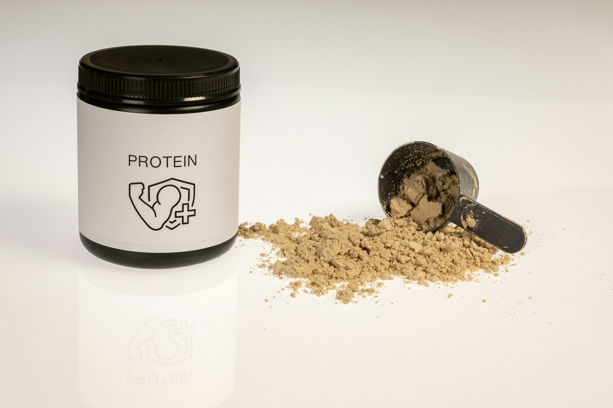

Сывороточный (whey) и казеиновый (casein) протеины — оба получены из молока, оба содержат полный набор аминокислот, и оба работают — но ведут себя совершенно по-разному после попадания в организм. Разница сводится к одному: как быстро тело их расщепляет. Именно этот факт определяет почти всё остальное в этом сравнении — от того, когда какой принимать, до того, стоит ли покупать оба.
Откуда они берутся
Молоко примерно на 80% состоит из казеина и на 20% из сыворотки по содержанию белка. Оба продукта — просто побочные продукты производства сыра, разделяемые в одном и том же процессе: сыворотка — это жидкость, казеин — творожная масса. Ни один из них не является синтетическим или «переработанным» в том пугающем смысле, в котором это слово иногда используют — их выделяют и высушивают с помощью фильтрации, по принципу похожей на декофеинизацию кофе.
Главное отличие: скорость переваривания
Сывороточный протеин переваривается быстро. Доза изолята сыворотки может поднять уровень аминокислот в крови в течение 30–45 минут и в основном покидает пищеварительную систему примерно за 2 часа. Казеин образует гелеобразный сгусток в желудке при контакте с кислотой, что резко замедляет его расщепление — аминокислоты поступают в кровь на протяжении 6–8 часов, а не разом.
Это не второстепенная техническая деталь — именно поэтому эти два продукта существуют как отдельные категории, а не один универсальный «молочный протеин».
Аминокислотный профиль и содержание лейцина
Оба — полноценные белки, содержащие все девять незаменимых аминокислот, и оба богаты аминокислотами с разветвлённой цепью (BCAA), запускающими синтез мышечного белка. У сыворотки обычно немного выше концентрация лейцина — конкретной аминокислоты, служащей основным триггером роста мышц — примерно 10–11% от общего содержания против 8–9% у казеина. На практике эта разница достаточно мала, чтобы общее суточное потребление белка значило гораздо больше, чем этот разрыв.
Когда какой имеет смысл
Сыворотка: вокруг тренировки
Быстрый всплеск аминокислот от сыворотки хорошо совпадает с посттренировочным окном, когда мышечная ткань готова усваивать аминокислоты для восстановления. Её также легче смешивать и переваривать, не чувствуя тяжести перед тренировкой, поэтому она остаётся выбором по умолчанию до и после тренировок для большинства людей.
Казеин: перед сном или между приёмами пищи
Медленное высвобождение казеина лучше всего подходит для периодов без еды длительностью в несколько часов — чаще всего прямо перед сном, когда организм иначе проводит 7–9 часов вообще без поступления белка. Некоторые исследования ночного синтеза мышечного белка показали измеримую, хоть и умеренную, пользу от дозы казеина перед сном по сравнению с отсутствием белка вообще. Это также разумный выбор в качестве перекуса между приёмами пищи, если вы контролируете голод, так как медленное переваривание немного дольше поддерживает чувство сытости, чем быстро усваиваемая альтернатива.
Действительно ли время приёма так важно?
Меньше, чем внушает реклама добавок. Исследования по времени приёма белка (иногда называемому «анаболическим окном») значительно изменились за последнее десятилетие — более ранние исследования, предполагавшие узкое посттренировочное окно для приёма белка, во многом были опровергнуты более поздними работами, показавшими, что общее суточное потребление белка и его равномерное распределение по приёмам пищи важнее, чем попадание в точное 30-минутное окно после тренировки. Если вы уже получаете достаточно белка, распределённого на 3-5 приёмов пищи в день, замена конкретного порошка в конкретное время не сделает и не сломает результат.
Стоимость и практические соображения
Концентрат сыворотки обычно самый дешёвый вариант на грамм белка, изолят сыворотки стоит немного дороже (меньше лактозы и жира, больше фильтрации), а мицеллярный казеин обычно самый дорогой из трёх из-за более сложного производства. Для большинства людей с ограниченным бюджетом концентрат сыворотки прекрасно покрывает большинство случаев, а дополнительная польза именно от казеина больше про удобство и сытость, чем про драматическую разницу в результатах.
Лактоза и переносимость
Оба продукта получены из молока и могут содержать остаточную лактозу, хотя изолят сыворотки и мицеллярный казеин обычно содержат меньше лактозы, чем концентрат сыворотки, благодаря дополнительной фильтрации. При непереносимости лактозы проверяйте маркировку на предмет изолята, либо рассмотрите растительную альтернативу, если молочный белок стабильно вызывает дискомфорт независимо от степени очистки.
Практический вывод
Ни один из них объективно не «лучше» — они подходят для разных моментов дня, а не конкурируют напрямую. Разумный вариант по умолчанию для большинства: сыворотка вокруг тренировок за скорость и удобство смешивания, казеин перед сном, если нужен медленный источник на время ночного голодания — и не стоит усложнять сверх этого. Если не хочется держать две отдельные банки, смешанный протеин, объединяющий оба вида, — вполне разумное решение в один продукт.
Частые вопросы
Можно ли смешивать сыворотку и казеин?
Да — многие смешанные протеины намеренно объединяют оба вида, давая быстрый начальный выброс от сыворотки плюс медленный «хвост» от казеина. Нет никакого минуса в том, чтобы смешивать их самостоятельно, если предпочитаете отдельные банки.
Действительно ли казеин лучше работает перед сном?
Исследования показывают, что казеин перед сном умеренно повышает ночной синтез мышечного белка по сравнению с отсутствием белка вообще, но эффект небольшой, и общее суточное потребление белка значит гораздо больше, чем этот конкретный выбор времени.
Лучше ли один из них для похудения?
Более медленное переваривание казеина может немного дольше поддерживать сытость, что некоторым удобно между приёмами пищи, но для похудения общие калории и общий белок важнее, чем конкретный тип.
Какой лучше при непереносимости лактозы?
Ни один изначально не лучше — и изолят сыворотки, и казеин получены из молока и могут содержать следовую лактозу. Изолят сыворотки обычно содержит меньше лактозы, чем концентрат, поэтому при чувствительности проверяйте маркировку.